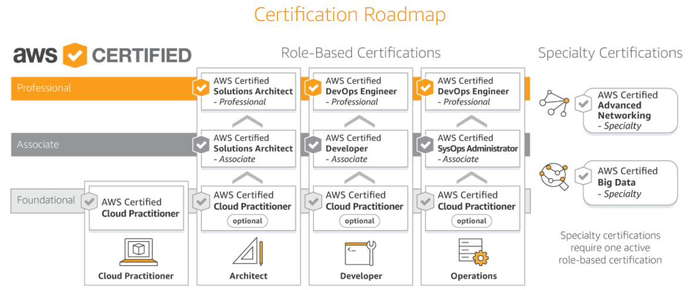
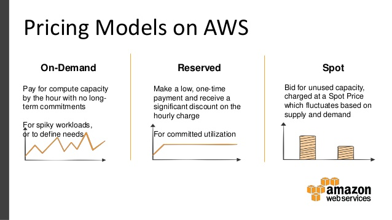

30天鐵人賽介紹 AWS 雲端世界 - 1: 雲端服務概觀
前言
雲端服務這幾年已經普及至每個企業與開發者的心中，對於接受度與使用廣度/深度也日漸加重。而這些廠商與服務更新的速度也十分快速，對於一個尚未接觸過雲端或是才剛踏入軟體開發領域的新人來說，很難直接從過往的資料來協助它們了解如何使用這些服務來建構出一個系統。
因此，今年的鐵人賽將以 Amazon Web Services 為主題，在30天內連續介紹幾個主要(*個人認為重要的)服務給新朋友們認識，而熟知該服務的老朋友們也歡迎補充說明或與其他雲端服務商比較同性質服務的優缺點讓更多人能跨過這個知識門檻。
不過我們在正式了解AWS的服務之前，我們先來看看整體雲端運算(Cloud Computing)包含什麼。
Cloud Computing Introduction Overview
雲端運算，是一種基於網際網路的資源使用方式，通過這樣的使用方式，我們可以直接租用共享的軟硬體資源和按需求提供給種不同的各種終端電腦和其他裝置與服務的使用權利。
上面這句話聽起來饒舌，但就是你可以有錢當大爺要用多少就買多少就買多少服務，快速的搭建好一台企業級的資料庫或是電腦主機而無須透過傳統的硬體採購、安裝、網路配置與作業系統與服務開通的過程，在幾分鐘內就可以得到你要的資源。
如此一來用戶不再需要了解電腦運算中複雜且難以架設的基礎設施的細節，也不必具有大量且深厚的專業知識，可大幅度的降低資源操控的門檻，加速我們開發的時程與有效的控制資源。
而目前市場調查界有名的 Gartner 也整理了2017 的市場象限排名:
從上圖我們可以很簡單的看到右上角的上限，就是面對一般市場的領先者就是 Amazon Web Service，其次追趕在後的為 Microsoft Azure，而在右下角的則為創新與新技術市場的領先者，帶頭的為 Google Cloud Platform。
而從服務的類型來看可以與傳統相比總共有三種類型:

這邊參考一個 Pizza 概念圖來解釋這三者的差異，如下:

Traditional(on-premise):
廚房、爐具、食材與廚師都是自己一手包辦處理，在自己的店賣。
IaaS:
廚房與爐具是用外面供應商的，但食材與廚師都是自己來處，在自己的店賣。
PaaS:
廚房、爐具與食材是用外面供應商的，只有廚師都是自己來處，在自己的店賣。
SaaS:
整個Pizza都在外面做好，只是拿來店裡面賣而已。
Amazon Web Services Overview
Amazon Web Services(AWS)，是 Amazon 於2006 年正式成為一個雲端服務品牌被公開使用，但早在2004年的第一個服務SQS就已經正式上線了。
這邊官方也做了一個簡單的影片來介紹什麼是 AWS 與其包含的服務有什麼:
目前所有的服務類型可以分為以下幾個類別：
- Compute
- Storage
- Database
- Migration
- Networking & Content Delivery
- Developer Tools
- Management Tools
- Media Services
- Machine Learning
- Analytics
- Security, Identity & Compliance
- Mobile Services
- AR & VR
- Application Integration
- Customer Engagement
- Business Productivity
- Desktop & App Streaming
- Internet of Things
- Software
- AWS Cost Management
以上大類與其子項目的介紹就是本次挑戰的重點，不可能30天就詳細的介紹完，所以只會挑其中常見或是較為重要的服務做介紹。
也因為每年甚至每個月都有新服務浮現或既有服務被淘汰，詳細的內容可以參考AWS 產品介紹頁面。
而2013年AWS官方為了加強自家服務的推廣成立了相關的官方認證考試 - AWS Certification，認證考試相關的內容也會在後面的天數再次詳細的介紹。

AWS Free Tier Account
AWS 有提供12個月免費試用帳號，每個月有限定的免費金額可以使用(使用超過還是會被扣錢)。
可以透過AWS Free Tier來註冊。
該服務期間(12個月)，大部分服務在到期後是不會直接中止的，這邊要稍微注意一下時間避免忘記關閉該服務而被持續收費。
此外，額外需要注意的是該免費金額可以使用在大部分的服務，但在某些服務會限制使用的類型與額度，而少數服務則沒有開放適用。
完整的使用限制與每月換算可使用額度，可以參考AWS Free Tier (Non-expiring Offers)
AWS Price and Cost
很多使用雲端服務的朋友第一個都會問到雲端服務到底要多少錢? 其實最簡單的回答就是: 用多少算多少
這邊的用多少取決於你的使用時間、使用單位、占用的資源與使用方式，如果整個服務都是在雲端內部自己存取的跟需要用到外部網路讓雲端資源可以給目前單位的本機電腦使用就會有不同的費用計算方式。
此外，如果你確定你想要租用的服務是一個長期的(例如一年以上)，那你也可以採用 On Premises/Colocation 的方式來租用，這會讓你獲得更多的折扣。

上面的解釋聽起來又是一個很神的東西，所以官方也準備了兩個計算機來讓我們快速的了解我們大概需要多少錢來租用服務:
每月成本簡易計算器(AWS Simple Monthly Calculator)
這計算器可讓你大略估計個別或多項服務的價格，也可以使用範本來估算完整解決方案的價格。
TCO 計算器(AWS TCO calculator)
這個工具會考慮到執行某個解決方案的所有成本，包括實體設施、電源和冷卻，並提供成本的實際全面比較。
至於跟其他雲端服務的消費比較可以參考AWS vs Azure vs Google Cloud Pricing: Compute Instances
而文中也給出了一個不錯的心得:
- If you are not using AWS Reserved Instances and don’t have a Microsoft EA discount for Azure, Google Cloud is going to be cheaper in most scenarios because the Google SUD applies no matter what.
- If you commonly need the performance requirements of local SSD (vs attached storage like Persistent Disk), you’re going to pay a premium for it on Google Cloud.
- With the December 1, 2016, price cuts from AWS, Azure no longer matches or beats AWS on all prices for on-demand. Expect to see Azure match or beat those prices soon.
- AWS is likely not going to be the cheapest in most of these scenarios but it is often in the middle.
另外一篇 2017 的比較slide Cloud Price Comparison for Compute AWS vs Azure vs Google vs IBM 這證實了價錢上 Azure 與 GCP 的確在一步步的取得優勢。而 AWS 則持續的產品的多樣性與彈性上取得更彈性的策略。
AWS Compliance (Certifications and Accreditations)
這邊要稍微提及一下目前 AWS 有支援的認證，有不少使用者在使用雲端資源時礙於認證或是法規必須要取得一些第三方的認證才能將服務部屬至該環境，而 AWS 近年也考量到這些企業用戶的擔憂，也將此整理放入官方文件中:
- SOC 1/ ISAE 3402
- SOC 2
- SOC 3
- PCI DSS Level 1
- ISO 27001
- IRAP
- FIPS 140-2
- MPAA
- HIPAA
- FedRAMP (SM)
- DoD CSM Levels 1-2, 3-5
- DIACAP and FISMA
- MTCS Tier 3 Certification
- ITAR
- CSA
- ISO 9001
其他更多可以參考官方的AWS Cloud Compliance